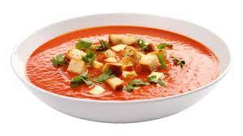

Gazpacho

Gazpacho is a refreshing and chilled soup originating from Andalusia in Spain. It's made from fresh, ripe tomatoes, cucumbers, bell peppers, onions, garlic, olive oil, vinegar, and seasoned with salt. All the ingredients are blended into a smooth, cold soup, typically served during hot summer days. This dish offers a burst of flavors and a cooling sensation, perfect for warm weather.
Ingredients:
- 1 kg ripe tomatoes
- 1 cucumber
- 1 green bell pepper
- 1 garlic clove
- 1/2 onion
- 50 ml extra virgin olive oil
- 25ml white wine vinegar
- salt to taste
- Stale bread (optional)
- Cold water
Steps:
- Wash the tomatoes, cucumber, bell pepper, and onion thoroughly. Chop all the ingredients and place them in a blender or food processor.
- Add the garlic, olive oil, vinegar, and a pinch of salt. If using bread, add a few pieces of stale bread soaked in water.
- Blend everything until you get a smooth mixture.
- Strain the mixture through a sieve or colander to remove skins and seeds if you prefer a smoother texture.
- Add cold water to adjust the consistency to your liking. Adjust salt if needed.
- Refrigerate the gazpacho for at least an hour before serving to ensure it's nicely chilled.